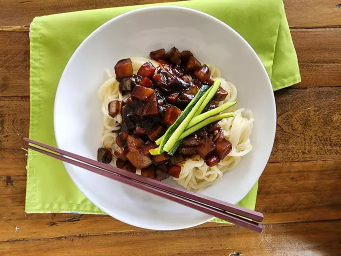

Jajangmyeon

Description
Jajangmyeon is a Chinese Korean fusion dish which translates to "black bean noodles"
Ingredients
- ½ tablespoon canola oil
- 1 clove garlic, minced, or more to taste
- ½ cup cubed carrots
- ½ cup peeled and cubed potatoes
- salt and ground black pepper
- ½ cup peeled and cubed zucchini
- ½ cup chopped onion
- 1 tablespoon cornstarch
- 1 tablespoon water
- 1 cup water
- 4 tablespoons black bean paste (chunjang)
- 1 tablespoon white sugar, or to taste
- ½ (7 ounce) package jaa jang myun noodles
Steps
- Heat oil in a wok over medium heat. Add garlic, carrot, and potato. Stir and add salt and pepper. Cook until softened, 5 to 7 minutes. Add zucchini and onion; stir.
- Combine cornstarch and water together in a bowl until fully mixed.
- Add water, black bean paste, and sugar to the wok and stir. Add starch mixture to wok slowly while stirring; cook until sauce thickens, 3 to 5 minutes.
- Bring a large pot of lightly salted water to a boil. Cook noodles in boiling water, stirring occasionally, until noodles are tender yet firm to the bite, about 3 minutes. Drain.
- Serve noodles in a large pasta bowl and add black bean mixture on top. Mix well.